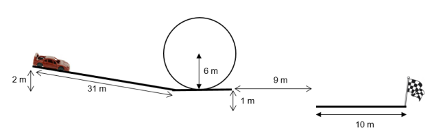

Simulation du comportement de voitures en Python dans un environnement contrôlé.
Ce projet consistait à simuler le comportement de voitures dans un circuit défini en utilisant Python.
Pour cela nous avons utilisé la bibliothèque numpy pour les calculs numériques. Ce projet ne comprenait pas d'interface graphique. Mais cette image reporésente le parcours que devaient parcourir les voitures dans le projet.

Nous avions une sélection de voitures avec des caractéristiques différentes (masse, accélération, dimentions, etc.) auxquelles nous pouvions ajouter du nos, une jupe, et/ou ub aileron. Nous devions simuler leur comportement en fonction de ces caractéristiques et du circuit. Nous avons utilisé des équations de mouvement pour calculer la position et la vitesse des voitures à des endroits spécifiques du circuit, en tenant compte de facteurs tels que la friction et les forces appliquées. Le projet nous a permis de mettre en pratique nos compétences en programmation et en physique pour créer une simulation du comportement des voitures sur le circuit.
Technologies : Python
Compétences : simulation, programmation, calcul numérique